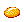
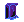
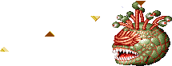

BEHOLDER
절망의 숲 (스테이지 5-A) 보스 '비홀더' |
기본 정보
클리어 시간 측정의 시작 시점
HP가 보이는 시점 부터
최단 시간 클리어 기록
시프 4:57 |
|||||||||
드랍 가능한 아이템 - 돈 + 점수 아이템 + 그외 아이템의 구성으로 떨어진다.
돈 : 10sp x1 + 1sp x5 (15sp) / 5sp x5 (25sp) / 10sp x2 + 5sp x1 (25sp)
기타 : 스크롤(scroll) 최대 5레벨
| 점수 아이템 : | 

|
| 도구류 : | |
| 장비류 : | |
'주시자'라는 이름답게 커다란 눈을 가지고 있으며 그 눈으로 주시하고 있는 범위에선 모든 주문시전이 실패하게 되는 까다로운 특성을 가지고 있는 보스다. - '주시자의 눈'이란 제목을 가진 AD&D 게임 시리즈도 있다- 또한 몸체 위에 달린 작은 눈알에서는 여러가지 강력한 광선이 발사된다.
일반적인 전투방법이 잘 안통하기 때문에 어렵게 느끼질 수도 있지만 공략법만 알면 상당히 쉬워진다. 그만큼 공략법을 알고 있느냐 모르느냐의 차이가 상당히 큰 보스라 할 수 있겠다.
일반적인 전투방법이 잘 안통하기 때문에 어렵게 느끼질 수도 있지만 공략법만 알면 상당히 쉬워진다. 그만큼 공략법을 알고 있느냐 모르느냐의 차이가 상당히 큰 보스라 할 수 있겠다.
비홀더의 눈알
주요 특성
Antimagic Cone
몸체 중앙의 커다란 눈은 150피트의 원뿔형태의 반마법(antimagic) 지역을 형성한다. 이 지역내에선 모든 마법 효과와 초자연적인 힘이 억제된다. 룰상에서는 이 지역이 형성되면 자신의 광선마저도 무효화 된다. 비홀더는 매 라운드마다 이 지역을 형성 할 건지를 결정하게 되며 눈을 감음으로써 효과를 비활성화 시킨다.
게임상에서는 기본적으로 비홀더가 바라보고 있는 방향과 상관없이 주문, 혹은 마법도구의 시전 자체가 무효화 되며 비홀더가 공격하는 중에는 정면에서 시전 할 경우 무효화 된다(대신 비홀더의 공격도 취소된다). 비홀더를 공격하는 도중에는 정면에서 시전해도 대부부분 무효화가 되지 않는다.
완드류와 이프리트의 항아리, 프로젝티드 이미지의 경우만 예외로 어떤 경우라도 무효화 되지 않는다.
※ 정리해보면 주문을 시전할 수 있는 경우는 '비홀더가 공격하는 도중에 뒤에서', '비홀더를 공격하는 도중'이다. 구석에서 뛰쳐나올 때도 공격하는 도중으로 인정이 되서 뒤쪽에서 시전이 가능하다.
비행 (flight)
비홀더의 몸체는 천성적으로 부유력이 있다. 그래서 게임상에서도 항상 떠다닌다. 따라서 일반적인 전투법과는 다른 전투를 해야 한다. 각 클래스간의 방법은 클래스별 공략법에서 자세히 소개한다.
※ 붉은색은 파이터가 입는 데미지, 푸른색은 매직 유저가 입는 데미지.
클레릭/드워프는 파이터에 가까운 데미지를, 시프/엘프는 매직 유저에 가까운 데미지를 입는다.
반격 (19/29)
몸체 중앙의 커다란 눈은 150피트의 원뿔형태의 반마법(antimagic) 지역을 형성한다. 이 지역내에선 모든 마법 효과와 초자연적인 힘이 억제된다. 룰상에서는 이 지역이 형성되면 자신의 광선마저도 무효화 된다. 비홀더는 매 라운드마다 이 지역을 형성 할 건지를 결정하게 되며 눈을 감음으로써 효과를 비활성화 시킨다.
게임상에서는 기본적으로 비홀더가 바라보고 있는 방향과 상관없이 주문, 혹은 마법도구의 시전 자체가 무효화 되며 비홀더가 공격하는 중에는 정면에서 시전 할 경우 무효화 된다(대신 비홀더의 공격도 취소된다). 비홀더를 공격하는 도중에는 정면에서 시전해도 대부부분 무효화가 되지 않는다.
완드류와 이프리트의 항아리, 프로젝티드 이미지의 경우만 예외로 어떤 경우라도 무효화 되지 않는다.
※ 정리해보면 주문을 시전할 수 있는 경우는 '비홀더가 공격하는 도중에 뒤에서', '비홀더를 공격하는 도중'이다. 구석에서 뛰쳐나올 때도 공격하는 도중으로 인정이 되서 뒤쪽에서 시전이 가능하다.
비행 (flight)
비홀더의 몸체는 천성적으로 부유력이 있다. 그래서 게임상에서도 항상 떠다닌다. 따라서 일반적인 전투법과는 다른 전투를 해야 한다. 각 클래스간의 방법은 클래스별 공략법에서 자세히 소개한다.
※ 붉은색은 파이터가 입는 데미지, 푸른색은 매직 유저가 입는 데미지.
클레릭/드워프는 파이터에 가까운 데미지를, 시프/엘프는 매직 유저에 가까운 데미지를 입는다.
반격 (19/29)
| 연속으로 5히트 이상 맞을 경우 고리 모양의 광선을 사방으로 발사한다. A+B등으로 회피할 수 있지만 광선의 발사속도가 빠르기 때문에 되도록이면 연속 4히트까지만 공격하는 것이 좋다. 주문 무효화 반지가 있을 경우 피해를 입지 않는다. 비홀더의 방향에 상관없이 좌측 상단 부근은 안전지대다. 전작 TOD에서는 리버스 그래비티의 효과를 가지고 있었던 광선이다. |
패턴 분석
| Flesh to Stone (27/36) | |
|  | 위쪽의 비홀더를 만났을 때 최초로 딱 한번 발사한다. 맞는 즉시 데미지를 입고 석화가 진행되며 빠른 시간내에 스틱이나 방향키를 좌우로 흔들지 않으면 그대로 게임오버가 된다. 바로 정면으로 발사하기 때문에 맞을 일은 거의 없지만 위아래로 판정이 약간 넓기 때문에 비홀더를 때리려 할 때 주의하도록 한다. 주문 무효화 반지가 있을 경우 피해를 입지 않지만 오브를 가지고 있을 경우는 피해를 입는다. |
| Inflict Moderate Wounds (26/40) | |
| 초록색의 광선을 360도 회전시키는데 이 광선에 닿으면 데미지를 입는다. 범위가 상당히 넓기 때문에 피하기가 좀 어려운 편이다. 비홀더 머리 위에서 지면을 향해 대각선의 궤도를 그리며 나가기 때문에 비홀더 근처에서 앉으면 피할 수 있다. 키가 작은 드워프는 서 있더라도 맞지 않을 수도 있다. 파이터, 드워프는 A+B를 쓰고 클레릭, 엘프는 빈 주문칸(D키)을 쓰고 시프, 매직 유저는 백스텝을 쓰는게 피하기에 좀 더 용이 하다. |
|
| sleep (6/8) | |
| 거품 형태의 광선을 발사하며 이것에 맞은 플레이어 캐릭터는 잠들어 버린다. 효과만 봐서는 무서운 공격이지만 광선이 발사되는 범위가 작기 때문에 실제로는 그리 위험하지는 않다. 잠들어 있는 시간이 길지는 않지만 거리가 떨어져 있는 상태면 다른 후속 공격을 맞을 수도 있다. 이 공격 역시 주문 무효화 반지가 있으면 피해를 입지 않는다. |
|
| 돌진 (22/34) | |
| 비홀더의 육탄 공격 중 하나로 몸체를 그대로 들이 받는다. 그림자 치기 거리를 유지하지 않는다면 공격하려다가 이 공격에 당하기 쉽다. 비홀더의 그림자와 Y축 위치가 조금이라도 겹쳐 있으면 당하게 된다. | |
| 물기 (18/18) | |
| 순간 뛰어들어서 플레이어를 물어 뜯는다. 역시 그림자 치기 거리를 잘 유지하지 않는다면 당하기 쉽다. | |
공통 공략법
1. 처음 등장 했을 때의 위치에서 공격을 성공시키면 비홀더는 뒤쪽으로 풀쩍 뛰어 오른다.
(물론 비홀더가 구석과 반대방향을 바라봐야 되지만 처음에는 신경쓰지 않아도 된다.)
풀쩍 뛰어 오른 비홀더에게 공격을 성공시키면 비홀더는 또 다시 뒤쪽으로 뛰어 오른다.
'비홀더가 뒤쪽으로 점프 → 공격 → 비홀더가 뒤쪽으로 점프 → 공격'의 패턴을 비홀더가 죽을 때까지 무한으로 반복 할 수 있다는 뜻이다. 물론 위에서도 언급했지만 연속 5히트 이상은 넘기지 않는게 좋다.
※ 참고사항 1
일반 A공격 만으로 4히트 시킬 경우 그 후의 A공격은 1히트만 성공시킬 수 있다.
'A 4히트 → A 1히트 → A 4히트 → A 1히트'의 패턴이 반복된다는 뜻이다.
이 현상은 주로 파이터, 클레릭, 엘프에 해당된다.
※ 참고사항 2
비홀더가 공격할 때는 잠깐 동안 무적시간이 있기 때문에 전체 화면 공격형 주문(예를 들면 아이스 스톰)을 제외한 모든 공격이 빗나간다. 비홀더의 공격이 끝날 때 쯤 공격을 할 수 있다.
2. 구석으로 뛰었다가 빠져나오기 위해 뛰어오를 때에도 데미지 판정이 있다.
따라서 그림자 치기 위치를 철저히 유지한 상태에서 공격하는게 좋다.

아래쪽의 경우 위 스샷에 보이는 팻말의 아래쪽에 딱 붙어서 이동하면 자동으로 그림자치기 위치가 된다.
쉽게 위치를 맞출 수 있어서 좀 더 쉽게 비홀더를 잡을 수 있다.

반면 위쪽은 아래쪽에 비해 위치를 잡기가 쉽지 않다. 위 스샷에 보이는 비홀더의 위치가 처음 위치인데 공격을 받고 뒤로 튕길 때 화살표가 가리키고 있는 그림자 위치로 튕긴다. 약간 위로 올라간다는 뜻이다. 따라서 많은 경험을 통해 위치를 기억하고 있거나 아니면 비홀더의 위치에 적절히 맞추는 센스가 필요하다.
※ 위쪽의 비홀더를 잡을 때 한가지 팁. 그냥 가면 비홀더가 공중에 떴을 때 잘 안보일 것이다. 그게 적응이 안되면 만나기 전에 최대한 스테이지 위쪽으로 이동했다가 가도록 해 보자. 화면이 좀 더 위쪽으로 스크롤이 되면서 바닥이 화면 아래쪽으로 조금 더 내려가기 때문에 공중에 뜬 비홀더가 좀 더 잘 보인다.
※ 그림자 치기 위치는 비홀더의 아래쪽 보다는 위쪽에서 잡는게 좋다. 위쪽이 더 여유가 많기 때문이다.
3. 처음 공격의 선택
위쪽의 경우 처음에는 무조건 플래쉬 투 스톤을 시전하기 때문에 일반 공격도 어렵지 않게 성공시킬 수 있다. 그러나 아래쪽의 경우 패턴이 여러가지여서 경우에 따라 그림자치기가 어긋나기도 하고 공격이 실패하기도 한다.
그래서 등장한 쉬운 방법이 이프리트의 항아리의 활용이다. 트린턴 마을에서 얻을 수도 있고 이번 스테이지에서도 쉽게 얻을 수 있다. 그림자 치기 위치만 맞추고 비홀더와 마주치자 마자 던지면 된다. 그러면 비홀더는 눈을 크게 떠보지만 데미지를 입게 되고 뒤로 뛰어오르게 된다.
진 소환의 반지도 이번 스테이지에서 얻을 수 있기 때문에 마찬가지 방식으로 활용할 수 있다. 시전시간이 이프리트의 항아리보다 1초 짧기 때문에 비홀더를 약간 더 빨리 잡을 수도 있다. 다만 쓰는 타이밍이 약간 늦어진다면 항아리와는 달리 무효화 되기 때문에 실패 할 가능성이 약간 존재한다.
컨티뉴얼 라이트, 혹은 컨티뉴얼 라이트 반지나 라이트닝 볼트 반지로도 가능하지만 진 소환의 반지와 같은 위험요소를 가지고 있다.
이론을 설명하기 위해 글이 길어졌지면 간단히 요약하면,
1. 그림자 치기 위치를 잘 맞추고
2. 이프리트의 항아리를 만나자 마자 던지고(혹은 위에 언급한 아이템을 사용하고)
3. 뛰어 올랐다가 내려오는 비홀더에게 4히트의 공격을 성공시키기를 반복하면 된다.
(물론 비홀더가 구석과 반대방향을 바라봐야 되지만 처음에는 신경쓰지 않아도 된다.)
풀쩍 뛰어 오른 비홀더에게 공격을 성공시키면 비홀더는 또 다시 뒤쪽으로 뛰어 오른다.
'비홀더가 뒤쪽으로 점프 → 공격 → 비홀더가 뒤쪽으로 점프 → 공격'의 패턴을 비홀더가 죽을 때까지 무한으로 반복 할 수 있다는 뜻이다. 물론 위에서도 언급했지만 연속 5히트 이상은 넘기지 않는게 좋다.
※ 참고사항 1
일반 A공격 만으로 4히트 시킬 경우 그 후의 A공격은 1히트만 성공시킬 수 있다.
'A 4히트 → A 1히트 → A 4히트 → A 1히트'의 패턴이 반복된다는 뜻이다.
이 현상은 주로 파이터, 클레릭, 엘프에 해당된다.
※ 참고사항 2
비홀더가 공격할 때는 잠깐 동안 무적시간이 있기 때문에 전체 화면 공격형 주문(예를 들면 아이스 스톰)을 제외한 모든 공격이 빗나간다. 비홀더의 공격이 끝날 때 쯤 공격을 할 수 있다.
2. 구석으로 뛰었다가 빠져나오기 위해 뛰어오를 때에도 데미지 판정이 있다.
따라서 그림자 치기 위치를 철저히 유지한 상태에서 공격하는게 좋다.
아래쪽의 경우 위 스샷에 보이는 팻말의 아래쪽에 딱 붙어서 이동하면 자동으로 그림자치기 위치가 된다.
쉽게 위치를 맞출 수 있어서 좀 더 쉽게 비홀더를 잡을 수 있다.
반면 위쪽은 아래쪽에 비해 위치를 잡기가 쉽지 않다. 위 스샷에 보이는 비홀더의 위치가 처음 위치인데 공격을 받고 뒤로 튕길 때 화살표가 가리키고 있는 그림자 위치로 튕긴다. 약간 위로 올라간다는 뜻이다. 따라서 많은 경험을 통해 위치를 기억하고 있거나 아니면 비홀더의 위치에 적절히 맞추는 센스가 필요하다.
※ 위쪽의 비홀더를 잡을 때 한가지 팁. 그냥 가면 비홀더가 공중에 떴을 때 잘 안보일 것이다. 그게 적응이 안되면 만나기 전에 최대한 스테이지 위쪽으로 이동했다가 가도록 해 보자. 화면이 좀 더 위쪽으로 스크롤이 되면서 바닥이 화면 아래쪽으로 조금 더 내려가기 때문에 공중에 뜬 비홀더가 좀 더 잘 보인다.
※ 그림자 치기 위치는 비홀더의 아래쪽 보다는 위쪽에서 잡는게 좋다. 위쪽이 더 여유가 많기 때문이다.
3. 처음 공격의 선택
위쪽의 경우 처음에는 무조건 플래쉬 투 스톤을 시전하기 때문에 일반 공격도 어렵지 않게 성공시킬 수 있다. 그러나 아래쪽의 경우 패턴이 여러가지여서 경우에 따라 그림자치기가 어긋나기도 하고 공격이 실패하기도 한다.
그래서 등장한 쉬운 방법이 이프리트의 항아리의 활용이다. 트린턴 마을에서 얻을 수도 있고 이번 스테이지에서도 쉽게 얻을 수 있다. 그림자 치기 위치만 맞추고 비홀더와 마주치자 마자 던지면 된다. 그러면 비홀더는 눈을 크게 떠보지만 데미지를 입게 되고 뒤로 뛰어오르게 된다.
진 소환의 반지도 이번 스테이지에서 얻을 수 있기 때문에 마찬가지 방식으로 활용할 수 있다. 시전시간이 이프리트의 항아리보다 1초 짧기 때문에 비홀더를 약간 더 빨리 잡을 수도 있다. 다만 쓰는 타이밍이 약간 늦어진다면 항아리와는 달리 무효화 되기 때문에 실패 할 가능성이 약간 존재한다.
컨티뉴얼 라이트, 혹은 컨티뉴얼 라이트 반지나 라이트닝 볼트 반지로도 가능하지만 진 소환의 반지와 같은 위험요소를 가지고 있다.
이론을 설명하기 위해 글이 길어졌지면 간단히 요약하면,
1. 그림자 치기 위치를 잘 맞추고
2. 이프리트의 항아리를 만나자 마자 던지고(혹은 위에 언급한 아이템을 사용하고)
3. 뛰어 올랐다가 내려오는 비홀더에게 4히트의 공격을 성공시키기를 반복하면 된다.
추가 참고 사항
▶ LB오일에 아주 취약하다. 불꽃 3개가 전부 명중이 될 뿐 아니라 공중에 낮게 떠 있기 때문에 위로 솟구치는 불꽃에 2중, 3중으로 맞기 때문이다. 실제 위력은 시프 공략에서 체험 해 보기 바란다.
▶ 진 소환의 반지를 사용할 경우 화면이 녹색이 된 상황에서 고정이 된다. 일종의 버그다. 게임에는 아무런 영향도 미치지 않는다.
▶ 구석에서 때릴 경우 비홀더의 몸체가 바닥에 닿아 있다면 공격은 되지만 비홀더가 가드를 하는 듯한 효과가 나올 때가 있다. 이 경우 공격 후 경직시간이 길어지기 때문에 빠른 클리어를 원한다면 바닥에 붙기전에 때리는 것이 좋다. 특히 드워프의 경우 슬래쉬를 쓸 때 이런 현상이 나온다면 튕겨져 버리니 주의.
▶ 리치와 함께 유일하게 메테오 스웜을 두 발 맞는다(물론 이는 치트를 써야 확인할 수 있다).
▶ 또한 전 몬스터를 통틀어서 유일하게 오일에 타 죽는 모습을 보여준다.
▶ 진 소환의 반지를 사용할 경우 화면이 녹색이 된 상황에서 고정이 된다. 일종의 버그다. 게임에는 아무런 영향도 미치지 않는다.
▶ 구석에서 때릴 경우 비홀더의 몸체가 바닥에 닿아 있다면 공격은 되지만 비홀더가 가드를 하는 듯한 효과가 나올 때가 있다. 이 경우 공격 후 경직시간이 길어지기 때문에 빠른 클리어를 원한다면 바닥에 붙기전에 때리는 것이 좋다. 특히 드워프의 경우 슬래쉬를 쓸 때 이런 현상이 나온다면 튕겨져 버리니 주의.
▶ 리치와 함께 유일하게 메테오 스웜을 두 발 맞는다(물론 이는 치트를 써야 확인할 수 있다).
▶ 또한 전 몬스터를 통틀어서 유일하게 오일에 타 죽는 모습을 보여준다.